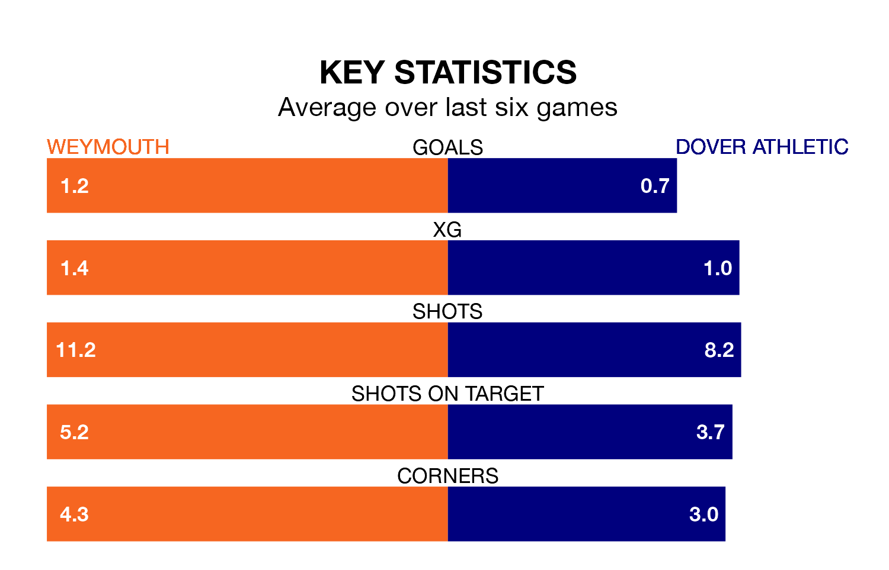

National League North and South's top two sides face each other at the Bob Lucas Stadium in Saturday's kick-off, when zero-placed Weymouth host zero-placed Dover Athletic.
Weymouth have picked up five wins and nine draws from 22 games so far this season, and sit 11 points above the visitors going into the 3pm match.
The Whites, meanwhile, have won one and drawn 10, picking up 13 points.
Weymouth are in disappointing form in National League North and South, with one win and three draws from their last six games.
With no wins and two draws over that period, Dover's form is worse – they have taken two points from 18, compared to the home team's six.
With 22 goals in 22 games so far this season, Athletic are the league's joint--17rd-lowest scorers with 1.0 goals per game. And they are conceding more than average, letting in 40 goals at a rate of 1.8 per game.
Weymouth are also below average scorers, with 1.1 goals per game, compared to a league average of 1.4. They have conceded 1.5 goals per game.
Over the last two years, Weymouth and Dover have played each other on five occasions. Weymouth won three of them, Dover one, and they drew once.
On average, Weymouth scored 2.2 goals and the Whites 1.6 in those matches.
Their last meeting was on November 18, when they played out a 4-4 draw.
Weymouth's last match was on December 16, a 1-1 draw against Chippenham Town, with getting the goal for Weymouth.
Dover drew 0-0 with Bath City last time out, also on December 16.
Updated: 12:43, 20/12/23